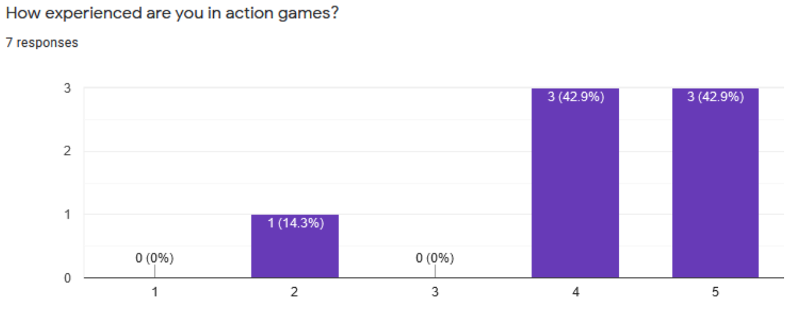
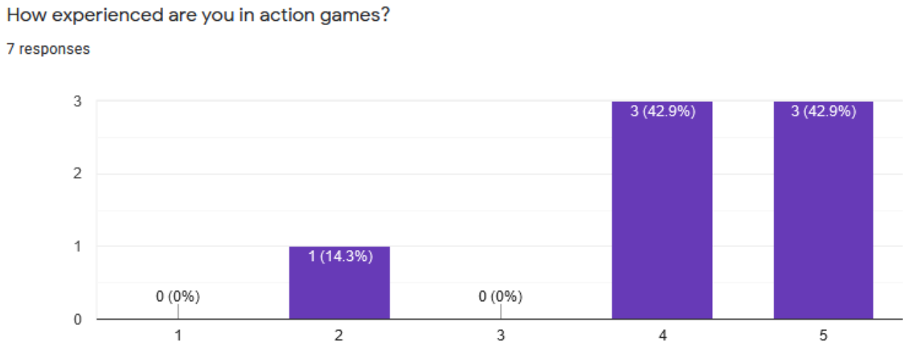
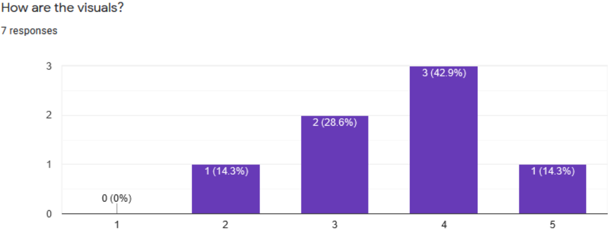
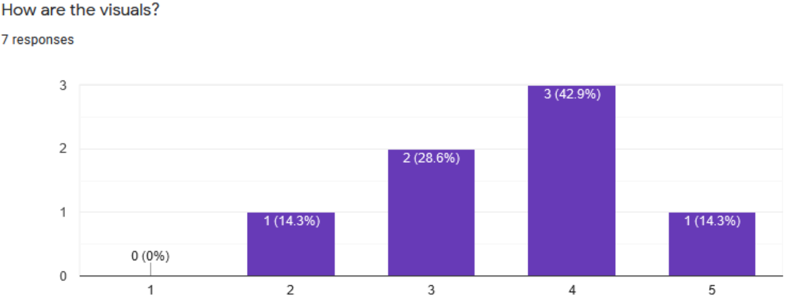
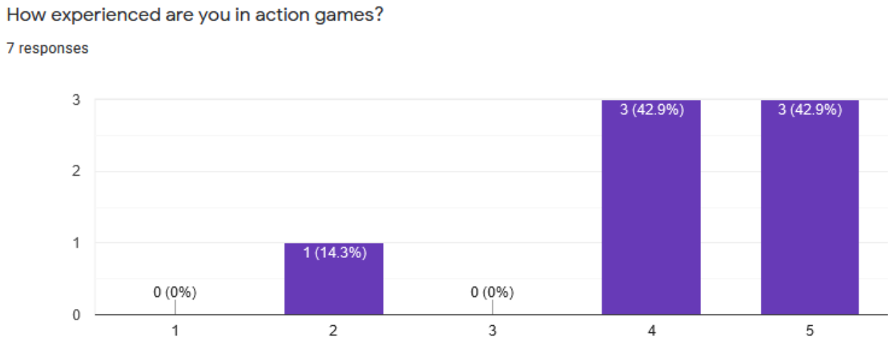
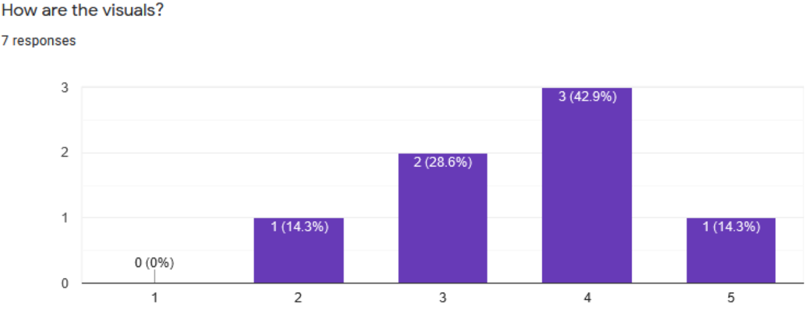

Playtesting Reports
Data
 

 



Our game is about a single, lonely white blood cell that must protect the body from viruses attempting to invade. The blood cell has only one weapon in it's arsenal: the all powerful antibodies! The white blood cell must destroy the viruses by shooting antibodies at them. In the body are many blood cells which the viruses are trying to infect. If too many get infected the body will be overrun. Grab power ups to help the white blood cell eliminate the enemies, but be aware that power ups only last a short amount of time while giving great power. Our game offers two modes: Campaign and Survival. In Campaign mode, expect to fight through a series of increasingly-difficult levels. In Survival mode, the battle of white blood cells and the body is endless, so see how long you can survive before being taken over! Our game aligns with the theme of exponential because the infection in our game has exponential-like growth and the aesthetics of our game are based on the idea of a virus spreading.
| Task | Person Assigned | Date Started | Date Completed | Backlog |
|---|---|---|---|---|
| Character movement | Adam Snyder | May 4 | May 6 | |
| character shooting | Adam Snyder | May 4 | May 6 | |
| Virus and Cell graphics | Adam Snyder | May 4 | May 6 | |
| Power Up and functionality | Adam Snyder | May 12 | May 14 | |
| Antibody graphics and behavior | Adam Snyder | May 14 | May 17 | |
| Sound effects for shooting and power up | Adam Snyder | May 14 | May 17 | |
| Graphics for character and crosshairs | Adam Snyder | May 14 | May 17 | |
| Character reset | Adam Snyder | May 17 | May 18 | |
| Added webpage to github | Adam Snyder | May 18 | May 19 | |
| Bomb added with UI updates | Adam Snyder | May 18 | May 19 | |
| Bomb cooldown, visual effects | Adam Snyder | May 18 | May 19 | |
| Intro Page | Antonio Yun | May 4 | May 5 | |
| Settings Page | Antonio Yun | May 4 | May 5 | |
| Highscore Page | Antonio Yun | May 4 | May 5 | |
| In Game UI | Antonio Yun | May 6 | May 7 | |
| Defeat move data to differnt scene | Antonio Yun | May 7 | May 10 | |
| Defeat move data to differnt scene | Antonio Yun | May 10 | May 13 | |
| Create Multiple lives | Antonio Yun | May 13 | May 16 | |
| Defeat page | Antonio Yun | May 16 | May 19 | |
| Scoring System | Antonio Yun | May 19 | May 22 | |
| Random powerup generation | Antonio Yun | May 22 | May 26 | |
| Volumn control | Antonio Yun | May 26 | May 30 | |
| Pause | Antonio Yun | May 30 | June 2 | |
| Cells behavior | Daniel James Smith | May 3 | May 6 | |
| Virus behavior | Daniel James Smith | May 6 | May 9 | |
| Better damage system | Daniel James Smith | May 9 | May 12 | |
| Sound effects when hit | Daniel James Smith | May 12 | May 15 | |
| Screen flash | Daniel James Smith | May 15 | May 18 | |
| Better death feedback | Daniel James Smith | May 18 | May 21 | |
| Cells health bar | Daniel James Smith | May 21 | May 24 | |
| Virus movement | Daniel James Smith | May 24 | May 27 | |
| Cells curing with antibody | Daniel James Smith | May 27 | May 30 | |
| Make survival level | Daniel James Smith | May 30 | June 2 |


Adam Snyder
Daniel Smith
Antonio Yun
Music:
https://www.freesfx.co.uk/Category/Technological/231
Cool Storm
https://www.freesfx.co.uk/Category/Electronica/208
Background picture for intro scene
https://www.freepik.com/free-vector/realistic-viruses-background_5971309.htm
Attribution:Background vector created by
macrovector - www.freepik.com
Background for death screen
Lynn Greyling (publicdomainpictures.net)
https://www.needpix.com/photo/download/1388565/background-texture-red-red-textured-surface-free-pictures-free-photos-free-images-royalty-free-free-illustrations
CoronaVirus Background
https://imgur.com/CYodxCn